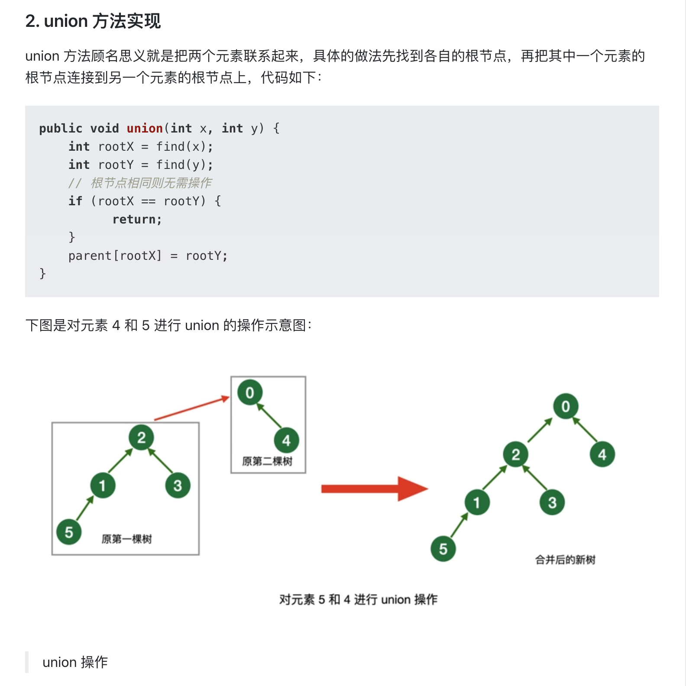
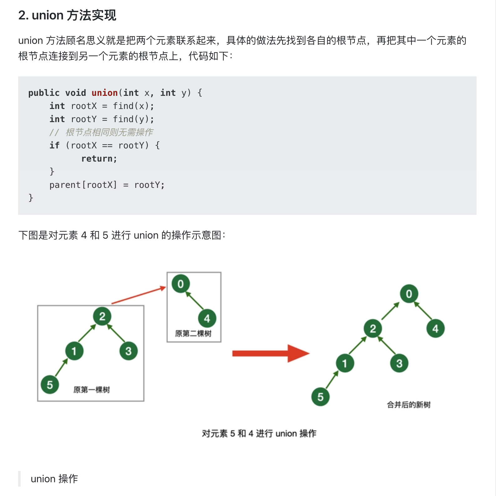

基本知识
目录
二叉树
二叉树 二叉树是有限个结点的集合，这个集合或者是空集，或者是由一个根结点和两株互不相交的二叉树组成，其中一株叫根的做左子树，另一棵叫做根的右子树。
二叉树的性质
满二叉树 深度为k且有2^k －1个结点的二叉树称为满二叉树
完全二叉树 深度为 k 的，有n个结点的二叉树，当且仅当其每个结点都与深度为 k 的满二叉树中编号从 1 至 n 的结点一一对应，称之为完全二叉树。（除最后一层外，每一层上的节点数均达到最大值；在最后一层上只缺少右边的若干结点）

- 性质4：具有 n 个结点的完全二叉树的深度为 log2n + 1
注意
- 仅有前序和后序遍历，不能确定一个二叉树，必须有中序遍历的结果
树类搜索算法
- 一般来说就是深度优先搜索,广度优先搜索,A搜索,IDA搜索等几种，通常用的最多就是DFS和BFS。
二叉树的存储结构


堆
如果一棵完全二叉树的任意一个非终端结点的元素都不小于其左儿子结点和右儿子结点（如果有的话） 的元素，则称此完全二叉树为最大堆。
同样，如果一棵完全二叉树的任意一个非终端结点的元素都不大于其左儿子结点和右儿子结点（如果 有的话）的元素，则称此完全二叉树为最小堆。
最大堆的根结点中的元素在整个堆中是最大的；
最小堆的根结点中的元素在整个堆中是最小的。
霍夫曼树
定义：给定n个权值作为n的叶子结点，构造一棵二叉树，若带权路径长度达到最小，称这样的二叉树为最优二叉树，也称为哈夫曼树(Huffman tree)。
构造：
假设有n个权值，则构造出的哈夫曼树有n个叶子结点。 n个权值分别设为 w1、w2、…、wn，则哈夫曼树的构造规则为：
- 将w1、w2、…，wn看成是有 n 棵树的森林(每棵树仅有一个结点)；
- 在森林中选出两个根结点的权值最小的树合并，作为一棵新树的左、右子树，且新树的根结点权值为其左、右子树根结点权值之和；
- 从森林中删除选取的两棵树，并将新树加入森林；
- 重复(2)、(3)步，直到森林中只剩一棵树为止，该树即为所求得的哈夫曼树。
二叉排序树
二叉排序树（Binary Sort Tree）又称二叉查找树（Binary Search Tree），亦称二叉搜索树。
二叉排序树或者是一棵空树，或者是具有下列性质的二叉树：
- 若左子树不空，则左子树上所有结点的值均小于它的根结点的值；
- 若右子树不空，则右子树上所有结点的值均大于或等于它的根结点的值；
- 左、右子树也分别为二叉排序树；
- 没有键值相等的节点
二分查找的时间复杂度是O(log(n))，最坏情况下的时间复杂度是O(n)（相当于顺序查找）
平衡二叉树
平衡二叉树（balanced binary tree）,又称 AVL 树。它或者是一棵空树,或者是具有如下性质的二叉树：
- 它的左子树和右子树都是平衡二叉树，
- 左子树和右子树的深度之差的绝对值不超过1。
平衡二叉树是对二叉搜索树(又称为二叉排序树)的一种改进。二叉搜索树有一个缺点就是，树的结构是无法预料的，随意性很大，它只与节点的值和插入的顺序有关系，往往得到的是一个不平衡的二叉树。在最坏的情况下，可能得到的是一个单支二叉树，其高度和节点数相同，相当于一个单链表，对其正常的时间复杂度有O(log(n))变成了O(n)，从而丧失了二叉排序树的一些应该有的优点。
B-树
B-树：B-树是一种非二叉的查找树， 除了要满足查找树的特性，还要满足以下结构特性：
一棵 m 阶的B-树：
- 树的根或者是一片叶子(一个节点的树),或者其儿子数在 2 和 m 之间。
- 除根外，所有的非叶子结点的孩子数在 m/2 和 m 之间。
- 所有的叶子结点都在相同的深度。
B-树的平均深度为logm/2(N)。执行查找的平均时间为O(logm)；
Trie 树 - 字典树
Trie 树，又称前缀树，字典树， 是一种有序树，用于保存关联数组，其中的键通常是字符串。与二叉查找树不同，键不是直接保存在节点中，而是由节点在树中的位置决定。一个节点的所有子孙都有相同的前缀，也就是这个节点对应的字符串，而根节点对应空字符串。一般情况下，不是所有的节点都有对应的值，只有叶子节点和部分内部节点所对应的键才有相关的值。
Trie 树查询和插入时间复杂度都是 O(n)，是一种以空间换时间的方法。当节点树较多的时候，Trie 树占用的内存会很大。
Trie 树常用于搜索提示。如当输入一个网址，可以自动搜索出可能的选择。当没有完全匹配的搜索结果，可以返回前缀最相似的可能。
并查集


 



二叉树基本计算公式

例题
二叉树的遍历
二叉树前中后序遍历
二叉树的前中后序遍历，使用递归算法实现最为简单，以前序遍历（LeetCode 144）为例：
void preorder(TreeNode *p, vector<int>& result) {
if (p == NULL) {
return;
}
result.push_back(p->val);
preorder(p->left, result);
preorder(p->right, result);
}
vector<int> preorderTraversal(TreeNode* root) {
vector<int> result;
if (root == nullptr) {
return result;
}
preorder(root, result);
return result;
}
二叉树的非递归遍历，主要的思想是使用栈（Stack）来进行存储操作，记录经过的节点。
非递归前序遍历（LeetCode 144）：
vector<int> preorderTraversal(TreeNode* root) {
TreeNode *p = root;
vector<int> result;
if (!p) {
return result;
}
stack<TreeNode *> q;
while (p || !q.empty()) {
if (p) {
result.push_back(p->val);
q.push(p);
p = p->left;
}
else {
p = q.top();
q.pop();
p = p->right;
}
}
return result;
}
非递归中序遍历（LeetCode 94）：
vector<int> inorderTraversal(TreeNode* root) {
TreeNode *p = root;
vector<int> result;
if (!p) {
return result;
}
stack<TreeNode *> q;
while (p || !q.empty()) {
if (p) {
q.push(p);
p = p->left;
}
else {
p = q.top();
result.push_back(p->val);
q.pop();
p = p->right;
}
}
return result;
}
非递归遍历中，后序遍历相对更难实现，因为需要在遍历完左右子节点之后，再遍历根节点，因此不能直接将根节点出栈。这里使用一个 last 指针记录上次出栈的节点，当且仅当节点的右孩子为空（top->right == NULL），或者右孩子已经出栈（top->right == last），才将本节点出栈：
非递归后序遍历（LeetCode 145）：
vector<int> postorderTraversal(TreeNode* root) {
TreeNode *p = root;
vector<int> result;
if (!p) {
return result;
}
TreeNode *top, *last = NULL;
stack<TreeNode *> q;
while (p || !q.empty()) {
if (p) {
q.push(p);
p = p->left;
} else {
top = q.top();
if (top->right == NULL || top->right == last) {
q.pop();
result.push_back(top->val);
last = top;
} else {
p = top->right;
}
}
}
return result;
}
二叉树层序遍历 LeetCode 102
二叉树层序遍历有两种方法，分别是深度优先和广度优先：
深度优先（DFS）实现：
void traversal(TreeNode *root, int level, vector<vector<int>> &result) {
if (!root) {
return;
}
// 保证每一层只有一个vector
if (level > result.size()) {
result.push_back(vector<int>());
}
result[level-1].push_back(root->val);
traversal(root->left, level+1, result);
traversal(root->right, level+1, result);
}
vector<vector<int> > levelOrder(TreeNode *root) {
vector<vector<int>> result;
traversal(root, 1, result);
return result;
}
广度优先（BFS）实现：
vector<vector<int>> levelOrder(TreeNode* root) {
std:queue<TreeNode *> q;
TreeNode *p;
vector<vector<int>> result;
if (root == NULL) return result;
q.push(root);
while (!q.empty()) {
int size = q.size();
vector<int> levelResult;
for (int i = 0; i < size; i++) {
p = q.front();
q.pop();
levelResult.push_back(p->val);
if (p->left) {
q.push(p->left);
}
if (p->right) {
q.push(p->right);
}
}
result.push_back(levelResult);
}
return result;
}
二叉树子树 LeetCode 572
判断二叉树是否是另一棵二叉树的子树，使用递归实现：
bool isSubtree(TreeNode* s, TreeNode* t) {
if (!s) return false;
if (sameTree(s, t)) return true;
return isSubtree(s->left, t) || isSubtree(s->right, t);
}
bool sameTree(TreeNode* s, TreeNode* t) {
if (!s && !t) return true;
if (!s || !t) return false;
if (s->val != t->val) return false;
return sameTree(s->left, t->left) && sameTree(s->right, t->right);
}
翻转二叉树 LeetCode 226
交互树的左右儿子节点，使用递归实现：
TreeNode* invertTree(TreeNode* root) {
if (root == nullptr) {
return nullptr;
}
TreeNode *tmp = root->left;
root->left = root->right;
root->right = tmp;
if (root->left) {
invertTree(root->left);
}
if (root->right) {
invertTree(root->right);
}
return root;
}